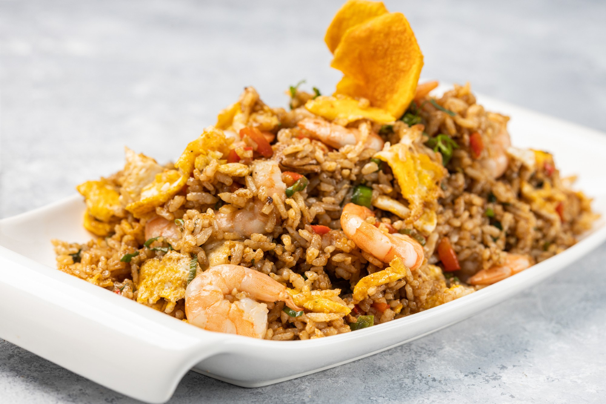

Shrimps Rice

Description
This shrimp and rice recipe is a vibrant, one-pan meal that brings together juicy, sautéed shrimp with fluffy, seasoned rice for a comforting and flavorful dish. It starts with onions, garlic, and bell peppers gently sautéed in olive oil, creating a fragrant base. The rice is simmered in a savory blend of broth and spices, absorbing layers of flavor as it cooks.
Tender shrimp are added toward the end, just long enough to cook through and soak up the seasoning without becoming rubbery. Finished with a squeeze of lemon and a sprinkle of fresh herbs, this dish is quick enough for weeknights but elegant enough for entertaining.
Ingredients
- 1 lb (450g) shrimp, peeled and deveined
- 1 cup long-grain rice
- 2 tablespoons olive oil
- 1 small onion, chopped
- 2 cloves garlic, minced
- 1 bell pepper, diced
- 2 cups chicken or vegetable broth
- 1 teaspoon paprika
- 1/2 teaspoon dried thyme
- Salt and pepper to taste
- Juice of half a lemon
- Chopped fresh parsley, for garnish
Steps
- Heat olive oil in a large skillet over medium heat.
- Add chopped onion and diced bell pepper; sauté for 3–4 minutes until softened.
- Stir in minced garlic and cook for about 30 seconds until fragrant.
- Add the rice, paprika, thyme, salt, and pepper; stir to combine.
- Pour in chicken or vegetable broth and bring to a boil.
- Reduce heat to low, cover the skillet, and simmer for 15 minutes.
- Add the shrimp on top of the rice, cover again, and cook for another 5–7 minutes until shrimp are pink and cooked through.
- Squeeze lemon juice over the dish and sprinkle with chopped parsley.
- Fluff the rice with a fork and serve warm.